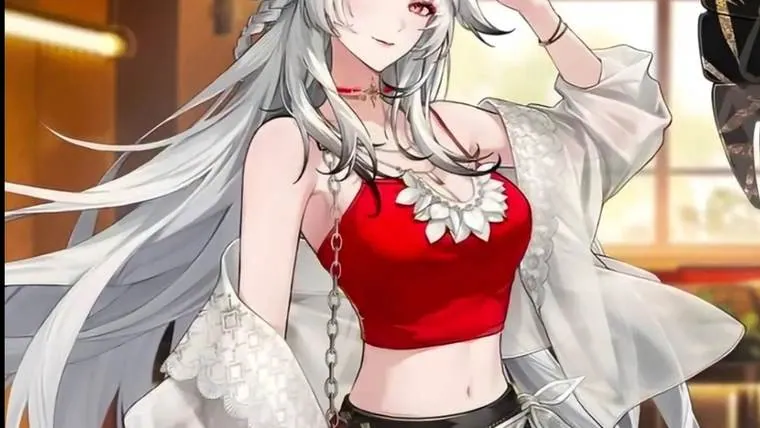
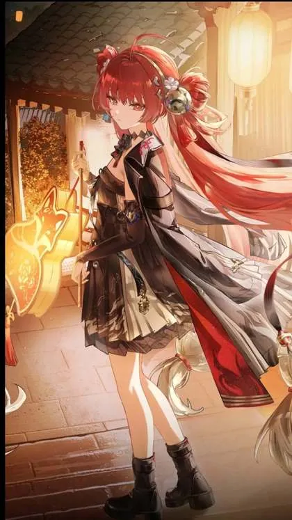
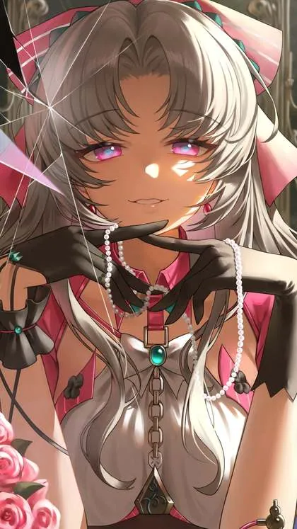
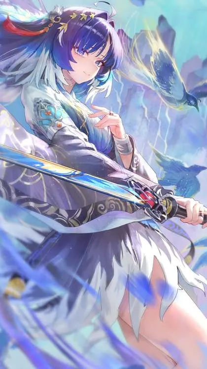

Wuthering Waves 3.7 and 3.8: Hsin, Suoming and Lily Explained

Last updated: 8 October 2026
Version 3.7 of Wuthering Waves is live, and it is a busy one. Subtitled "Prism's Illusion, Heart's Illumination", the update launched on 30 September 2026 from Kuro Games. It brings two new five-star Electro Resonators across its two banner phases: Hsin in Phase 1 and Suoming in Phase 2. It also wraps up a major story arc and adds several quality-of-life changes. Meanwhile, Kuro has started teasing what comes next, opening drip marketing for a new five-star named Lily ahead of Version 3.8. Here is a factual walkthrough of what is confirmed, what is expected, and what is still just a leak.

The two phases of Version 3.7
Version 3.7 is split into two banner phases. Phase 1 opened with the update on 30 September and runs until 22 October 2026. Phase 2 takes over from 22 October and runs until 11 November 2026. Each phase pairs a brand-new five-star debut with two returning five-stars.
| Phase | Dates | Featured characters |
|---|---|---|
| Phase 1 | 30 September – 22 October 2026 | Hsin (new — Electro, Rectifier) · Iuno rerun (Aero, Gauntlets) · Chisa rerun (Havoc, Broadblade) |
| Phase 2 | 22 October – 11 November 2026 | Suoming (new — Electro, Sword) · Lynae rerun (Spectro, Pistols) · Luuk Herssen rerun (Spectro, Gauntlets) |
Hsin: the first playable Sentinel
Hsin is a five-star Resonator who uses the Electro element and the Rectifier weapon type. She headlines Phase 1 of Version 3.7, which means she is available on the debut banner for the first stretch of the update, from 30 September to 22 October 2026.
What makes Hsin notable beyond her element is where she comes from. She is the first playable character drawn from the Sentinel faction introduced in the Mengzhou storyline, a faction that had not previously been represented by a playable Resonator. Her signature weapon is called Blooming Jadehaven.
Suoming: the Phase 2 debut
Suoming is the second new five-star of Version 3.7. She also uses the Electro element, but her weapon type is Sword, which sets her apart from Hsin at the mechanical level. She headlines Phase 2, running from 22 October to 11 November 2026, and her signature weapon is called Unspoken Rue.
Because both new Resonators share the Electro element, Version 3.7 is a strong patch for players building around that element, even though the two use different weapons and therefore fill different roles. Suoming's Phase 2 window overlaps with two Spectro reruns, Lynae (Pistols) and Luuk Herssen (Gauntlets). If you are deciding between the two debuts, the simplest distinction is the weapon: Rectifier for Hsin, Sword for Suoming.
What else shipped in Version 3.7
The new characters are only part of the update. Version 3.7 also adds and changes several pieces of the wider game:
- Simulacrum Nexus of Mengzhou — a new area added with the update.
- Story closure — the update closes out the Xuanfang main story arc.
- New Tales Quest — an additional quest added in 3.7.
- Camera overhaul — a reworked camera system.
- 20 team-setup slots — a larger number of saved team presets.
- Streamlined Echo management — a more efficient way to handle Echoes.
- Main Quest Replay — the ability to replay main quest content.
Taken together, these changes are mostly about convenience and revisiting content rather than new systems. The Xuanfang arc closure is the headline narrative point, while the quality-of-life list targets players who spend time managing teams and Echoes.
Lily and what we know about Version 3.8
Version 3.8 has not launched yet, but Kuro Games opened drip marketing for a new five-star Resonator named Lily on 7 October 2026. Lily is a Spectro character who uses the Pistols weapon type, and she comes from the Federated Cities, which places her in the New Federation storyline.
Kuro has officially described her as a young perfumer whose Resonance Ability turned her into a psychotherapist for soldiers. That is the confirmed framing of the character. Her gameplay role is where things get less certain: she is reported to be a healer and Unison support, but that is a strong leak rather than something officially confirmed, so treat it as unverified for now.
On timing, Version 3.8 is expected to release on 11 November 2026, the day Version 3.7 ends. Because of time zones, some servers may instead see it on 12 November. This date has not been officially confirmed by Kuro Games, so it remains an expectation rather than a fixed fact.
There are also rerun leaks circulating for 3.8, and these are not official. The leak for Phase 1 points to Sigrika (Aero, Gauntlets) and Hiyuki (Glacio, Sword). For Phase 2, the leaks conflict, with some pointing to Augusta and others to Galbrena. None of this should be treated as confirmed. A preview special broadcast for 3.8 is expected around 30 to 31 October 2026, an estimate based on the gap that preceded 3.7. Beyond 3.8, Version 4.0 is expected around 23 December 2026, again as an estimate.

What to pull
There is no single right answer here, so the sensible approach is to match banners to what your account actually needs.
- If you want the Sentinel storyline represented on your roster, Hsin is the draw. She is the first playable Sentinel and she is on Phase 1 until 22 October 2026.
- If you prefer Sword users, Suoming is the Phase 2 debut, running 22 October to 11 November 2026.
- If you are missing the reruns, both phases carry returning five-stars: Iuno and Chisa in Phase 1, Lynae and Luuk Herssen in Phase 2.
- If you are saving, Lily arrives in Version 3.8 as a Spectro Pistols character. Her reported healer and Unison support role is a leak, not a confirmed kit, so weigh it accordingly before committing.
Because both new characters are Electro, players already deep into Electro teams may want to compare them against their existing lineup rather than pulling both. And since 3.8 is expected only a few weeks after 3.7 closes, keeping some reserves for the next patch is reasonable.

Frequently asked questions
When did Version 3.7 launch, and what is it called?
Version 3.7 is subtitled "Prism's Illusion, Heart's Illumination" and launched on 30 September 2026 from Kuro Games.
Who are the new Resonators in Version 3.7?
Two five-stars debut. Hsin is an Electro Rectifier who headlines Phase 1 and is the first playable character from the Sentinel faction introduced in the Mengzhou storyline; her signature weapon is Blooming Jadehaven. Suoming is an Electro Sword user who headlines Phase 2; her signature weapon is Unspoken Rue.
When is Version 3.8 coming, and who is Lily?
Version 3.8 is expected on 11 November 2026, the day 3.7 ends, though some servers may see it on 12 November due to time zones; this is not officially confirmed. Lily is a new five-star teased on 7 October 2026 — a Spectro Pistols character from the Federated Cities, officially described as a young perfumer whose Resonance Ability turned her into a psychotherapist for soldiers. Her reported healer and Unison support role is a strong leak, not official.
Are the Version 3.8 reruns confirmed?
No. The 3.8 rerun leaks are not official. Phase 1 is leaked as Sigrika (Aero, Gauntlets) and Hiyuki (Glacio, Sword). For Phase 2 the leaks conflict between Augusta and Galbrena. A 3.8 preview broadcast is expected around 30 to 31 October 2026 as an estimate, and Version 4.0 is expected around 23 December 2026, also an estimate.